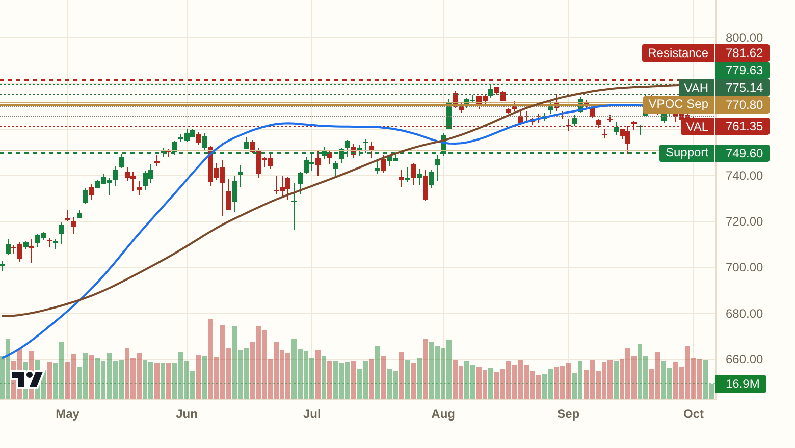
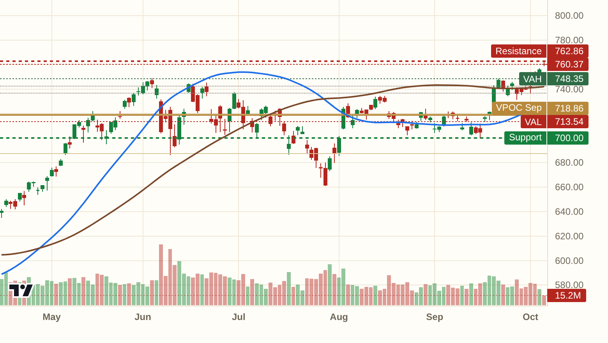
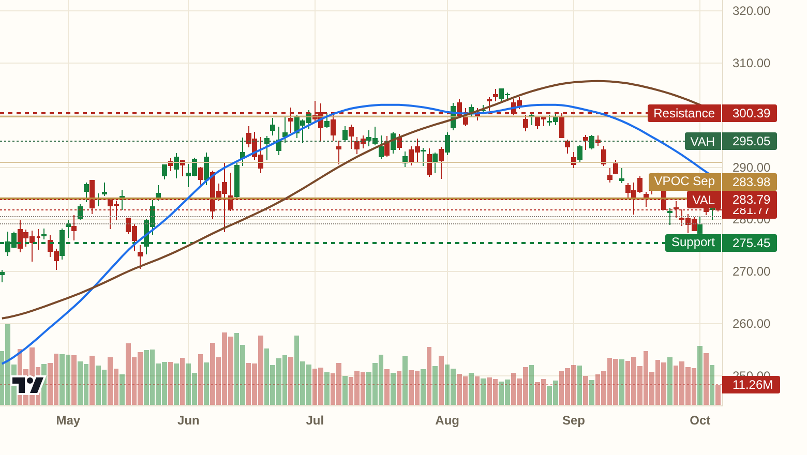
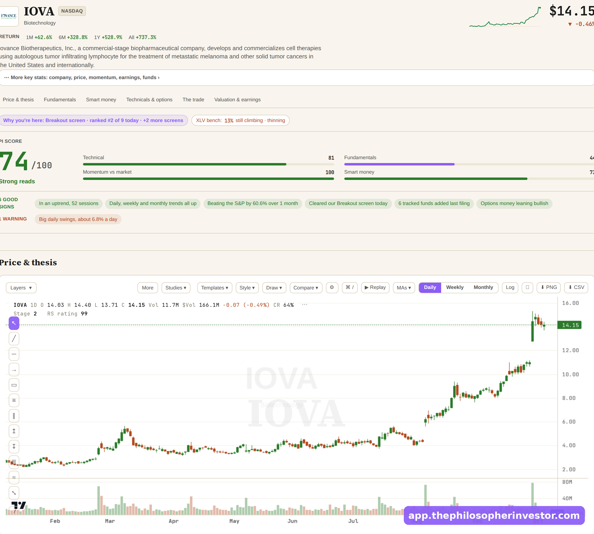
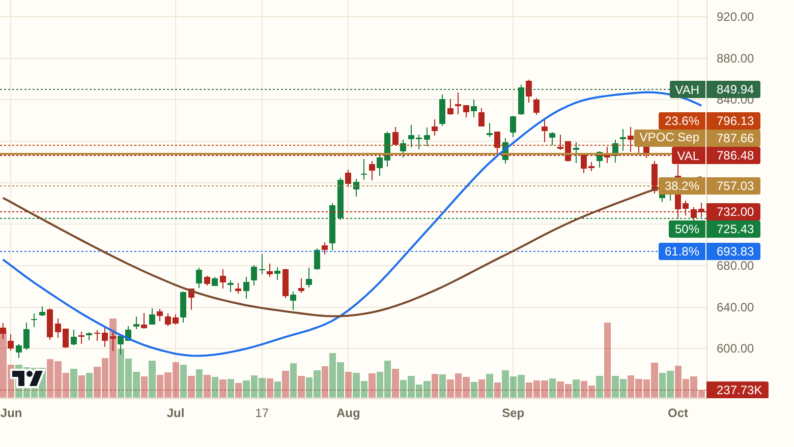
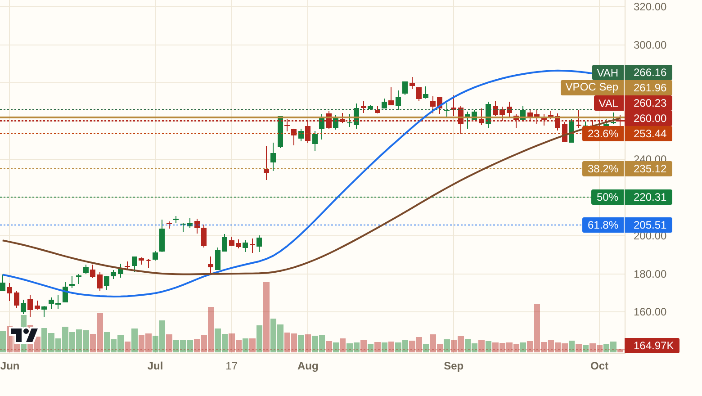
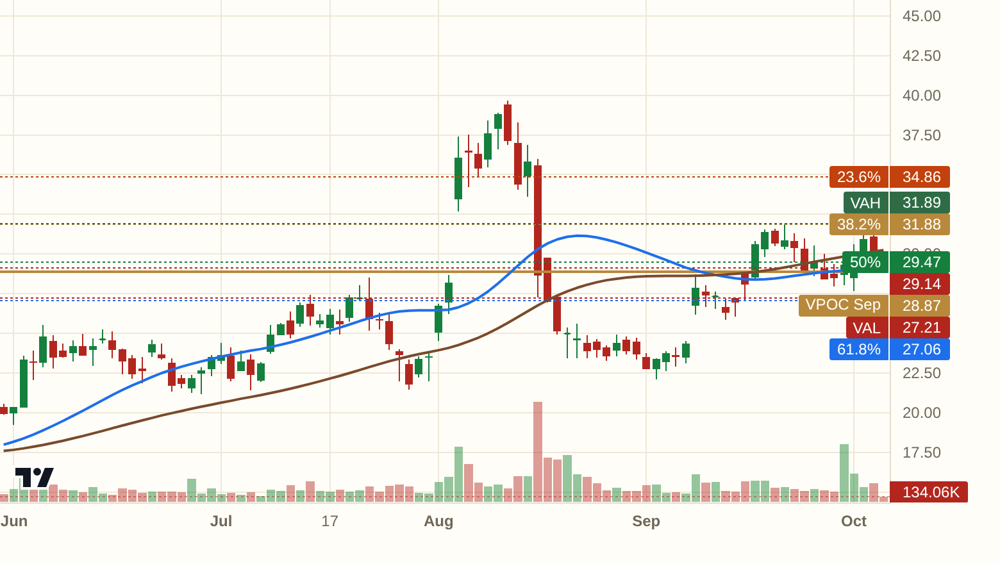
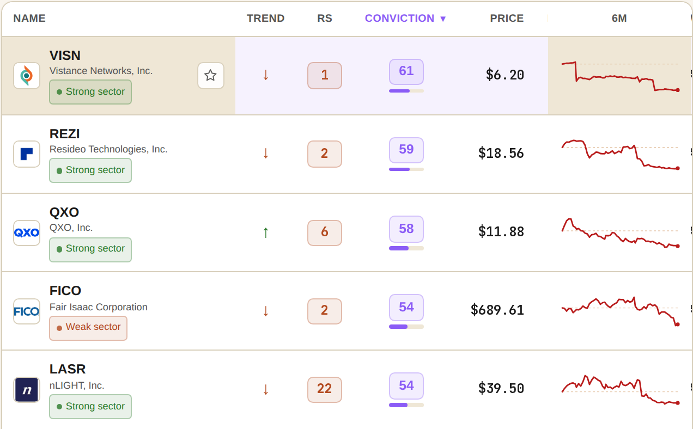

Hello my friends,
Yesterday I marked 775.14 as the first wall above SPY. We blew through it and closed the session sitting on the high of the year. That is what acceptance looks like.
SPY closed at 779.62, right on the high of the year, and above the August value-area edge at 779.37 that just flipped from resistance to support. The September magnet sits way down at 770.80. Between here and there, the 773.85 armored zone is the first place buyers should show up.

QQQ is at 760.37, also a 52-week high, and it has left the entire September value area behind. Nearest support is the September value-area edge at 748.35. As long as that holds, pullbacks are for buying.

IWM is the odd one out at 281.77. It never got back above the September value-area edge at 283.79, and it sits below its 100 HMA. Small caps are still under the monthly magnet. That one level decides whether the rotation broadens or stays narrow.

IOVA came off the Breakout board on 2026-09-08. It is +62.6% since. That is the whole reason I keep watching the boards instead of the headlines.

The whole book, wins and stops included: https://app.thephilosopherinvestor.com/portfolios?utm_source=daily
Came off the Momentum board last night. One of the cleaner trends out there, and I can see why. Price structure is tidy on the way up. The September value-area edge at 786.48 is the thing to watch. Get through that and the tape has room.
Here is the plan. Work in near 726.47, wrong below 685.03, first target the old high at 852.03. That is 3:1. Earnings land 2026-10-26, so you carry event risk for the ride.

The Dip board caught it. A controlled pullback inside an uptrend, and the buyers stepped in near the 238.68 July magnet. That level held. The stop is clean and the risk is defined.
Wrong on acceptance below 234.13. That is the whole trade. Full levels live on the board.

This one came off the desk. Price is sitting right on the September magnet at 28.87, and that is the line in the sand. Above it, the setup works. Below it, I am out.
Wrong on acceptance below 25.97. Everything else is noise.

Five names sit on three or more boards tonight. The options tape leans calls across the big tech names, with NVDA and TSLA drawing the heaviest premium. And the Quiet Accumulation board lit up with 91 fresh names at Monday's close. That is money being put to work before the crowd notices. The rotation is real. *[screenshot: the board, straight from the app]*
Every setup above sits on its board with the full levels: https://app.thephilosopherinvestor.com/screeners?utm_source=daily
Tonight's levels are good for tonight. The boards re-rank at every close, and tomorrow's post starts from scratch.
Everything in this post comes straight from the app: the live boards, the full levels on every idea, the flow. https://app.thephilosopherinvestor.com/?utm_source=daily
$20 a month or $200 a year, billed on Substack. Cancel anytime. Subscribe here: https://philosopherinvestor.substack.com/subscribe
This is not financial advice. Do your own research and manage your risk.
See you tomorrow,
Daniel
The dip buyers showed up early
Hello my friends,
Yesterday I marked 775.14 as the first wall above SPY. We blew through it and closed the session sitting on the high of the year. That is what acceptance looks like.
SPY closed at 779.62, right on the high of the year, and above the August value-area edge at 779.37 that just flipped from resistance to support. The September magnet sits way down at 770.80. Between here and there, the 773.85 armored zone is the first place buyers should show up.
*[chart: $SPY]*
QQQ is at 760.37, also a 52-week high, and it has left the entire September value area behind. Nearest support is the September value-area edge at 748.35. As long as that holds, pullbacks are for buying.
*[chart: $QQQ]*
IWM is the odd one out at 281.77. It never got back above the September value-area edge at 283.79, and it sits below its 100 HMA. Small caps are still under the monthly magnet. That one level decides whether the rotation broadens or stays narrow.
*[chart: $IWM]*
IOVA came off the Breakout board on 2026-09-08. It is +62.6% since. That is the whole reason I keep watching the boards instead of the headlines.
*[screenshot: the board that flagged it]*
The whole book, wins and stops included: https://app.thephilosopherinvestor.com/portfolios?utm_source=daily
Came off the Momentum board last night. One of the cleaner trends out there, and I can see why. Price structure is tidy on the way up. The September value-area edge at 786.48 is the thing to watch. Get through that and the tape has room.
Here is the plan. Work in near 726.47, wrong below 685.03, first target the old high at 852.03. That is 3:1. Earnings land 2026-10-26, so you carry event risk for the ride.
*[chart: $REGN]*
The Dip board caught it. A controlled pullback inside an uptrend, and the buyers stepped in near the 238.68 July magnet. That level held. The stop is clean and the risk is defined.
Wrong on acceptance below 234.13. That is the whole trade. Full levels live on the board.
*[chart: $THC]*
This one came off the desk. Price is sitting right on the September magnet at 28.87, and that is the line in the sand. Above it, the setup works. Below it, I am out.
Wrong on acceptance below 25.97. Everything else is noise.
*[chart: $FTK]*
Five names sit on three or more boards tonight. The options tape leans calls across the big tech names, with NVDA and TSLA drawing the heaviest premium. And the Quiet Accumulation board lit up with 91 fresh names at Monday's close. That is money being put to work before the crowd notices. The rotation is real. *[screenshot: the board, straight from the app]*
Every setup above sits on its board with the full levels: https://app.thephilosopherinvestor.com/screeners?utm_source=daily
Tonight's levels are good for tonight. The boards re-rank at every close, and tomorrow's post starts from scratch.
Everything in this post comes straight from the app: the live boards, the full levels on every idea, the flow. https://app.thephilosopherinvestor.com/?utm_source=daily
$20 a month or $200 a year, billed on Substack. Cancel anytime. Subscribe here: https://philosopherinvestor.substack.com/subscribe
This is not financial advice. Do your own research and manage your risk.
See you tomorrow,
Daniel
